|
The Edit MenuThe Edit menu provides commands that allow people to change, or edit, the contents of their documents. It also provides the commands that allow people to share data, within and between applications, via the Clipboard or the Edition Manager. All applications should support the Undo, Cut, Copy, Paste, and Clear commands. These commands provide standard text-editing abilities, which need to be available in modal dialog boxes such as the Save As dialog box, even though your application itself may not handle these features. You can include a Select All command and its keyboard equivalent if it makes sense for your application.Figure 4-72 shows an example of a standard, simple Edit menu. Figure 4-72 A standard Edit menu for an application 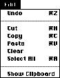 You can add other commands to this menu if they're essential to your application and involve changing user content. You must add the commands after the standard menu commands without changing their order. Figure 4-73 shows how to incorporate commands into the Edit menu without disrupting the standard order. Figure 4-73 Adding commands to the Edit menu 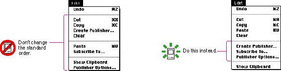 In addition to the standard commands, if your application implements the capabilities of the Edition Manager, include its commands in the Edit menu, separated from the standard commands by a gray line. Figure 4-74 shows a sample Edit menu that includes the required Edition Manager commands. Figure 4-74 A sample Edit menu with Edition Manager commands 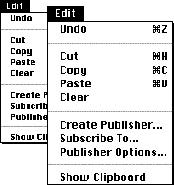 If you find that you need all of the available space in the Edit menu for your application's commands, another way to accommodate the Edition Manager commands is by implementing a submenu. Include a Publishing command in the Edit menu as the title of the submenu. Use the standard indicator for a hierarchical menu, as shown in Figure 4-75, which also shows the submenu with the Edition Manager commands. Because hierarchical menus increase the complexity of your application, it's best to use this approach only when you have no other alternative. Figure 4-75 A sample hierarchical Edit menu with Edition Manager commands 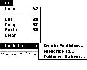 The ClipboardThe Clipboard holds whatever data is cut or copied from a document. It stores the contents until the user replaces them with a new cut or copy operation. The user can change documents, applications, or open a utility without losing the Clipboard contents. Because the contents of the Clipboard don't change when the user moves from one application to another, the Clipboard is used to transfer data among compatible applications and desk accessories. If the user moves the Clipboard file from one disk to another, the contents move with it, replacing any existing Clipboard file on the target disk.Figure 4-76 shows an example of the Clipboard window with some text in it. 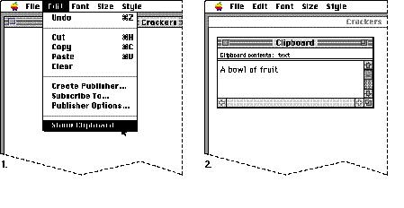 The Clipboard is available to all applications. Your application can show the contents of the Clipboard in a window. The Clipboard window looks and acts like a document window. The contents are visible, but not editable. Every time the user selects data in the active document and chooses Cut or Copy, store a copy of the selection in the Clipboard, replacing any previous Clipboard contents. Keep the previous contents available in case the user chooses Undo. Implement the Show Clipboard/Hide Clipboard command in the Edit menu so that the user can display and close the Clipboard window. If the Clipboard is already showing, the user can also use the close box or the Close command to close the window. Show Clipboard and Hide Clipboard are a single toggled item. The Show Clipboard/Hide Clipboard command is described in"Show Clipboard/Hide Clipboard" on page 91. You should let the user determine when the Clipboard window is open. For example, if the user leaves the window open when quitting your application, the Clipboard should be open when the user restarts it. In the cooperative, multitasking environment of the current system software, it's important that you hide your application's Clipboard window when your application is not active. In this model, each application has a local Clipboard. Whenever the user switches applications, the contents of the Clipboard are converted to a standard format. Undo/RedoThe Undo command reverses the effect of the user's previous operation. The Redo command reverses the effect of the last Undo command. Undo and Redo are a single toggled item. In most applications, there is one level of undo operations. The application determines which operations can be undone. Simple operations require your application to store a minimal amount of information about the previous state of the data in order to implement the Undo command. For example, if a user cuts one word from a document, you only need to store the size, the location, the content, and the style of the data. For operations that require you to store the entire state of the document in order to implement the Undo command, it may be more difficult to implement. You should consider the needs of your audience when making difficult decisions about which operations support the Undo command. Remember that your application must be able to redo every undo operation.In general, support the Undo command for operations that change the user's contents of a document. It's nice, but not necessary, to support the Undo command for operations that don't change the user's contents of a document. Actions that take a lot of effort to recreate are probably those that a user would most expect to be able to undo. For example, a user might spend several minutes arranging windows on a screen in a specific layout. If that user then accidentally chose the Tile command, the user would expect to be able to recover the original layout by using the Undo command. Most menu items, regardless of how the user invokes them, should be undoable. Most keyboard input, any sequence of characters typed from the keyboard or numeric keypad, including Delete (Backspace), Return, and Tab should also be undoable. Operations that may not be undoable include selecting, scrolling, splitting the window, or changing a window's size or location. None of these operations interrupts a typing sequence. For example, if the user types a few characters and then scrolls the document, the Undo operation doesn't undo the scrolling but does undo the typing. Whenever the location affected by the Undo command isn't currently showing on the screen, your application should scroll the document so the user can see the effect of the Undo command. You should add the name of the last operation to the Undo command. For example, it could read Undo Typing if the user just finished entering some text in a document. If the last operation can't be undone, you should use the phrase Can't Undo and display it dimmed, because it provides more feedback to the user about the current state. The Undo command changes to Redo after the user chooses Undo. You should also include the operation name in the Redo string when possible. If the user chooses Redo, reverse the undo operation. Figure 4-77 shows an example of the Edit menu with correctly updated Undo and Redo commands. Figure 4-77 The Undo and Redo commands 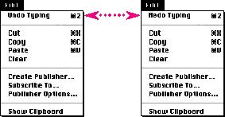 |
|
If a user is about to complete an operation that could have
a deleterious effect on data and that can't be undone, you
should warn the user. For example, if a user is about to
destroy a lot of data by replacing every fifth word with a
space, display an alert box that says something to the
effect of, "You are about to change a lot of your document.
You can't undo this operation." The buttons should be
labeled Replace and Cancel. If the user is about to make a
change that affects only the environment, such as changing
a window location, then it's not necessary to display a
warning.
The Command-Z combination is reserved as a keyboard equivalent for the Undo/Redo command in the Edit menu. It shouldn't be used for any other purpose. |
|
CutThe Cut command removes data that the user selects prior to choosing the command. People use the Cut command to delete the current selection or to move it. Store the cut selection on the Clipboard, replacing its previous contents.Make the area active where the cut selection was. The visual indicators vary by application type. For example, a word processor would display a blinking insertion point at the spot where the text was cut. In an array, the user would see an empty but highlighted cell. If the user chooses Paste immediately after choosing Cut, restore the document to the state it was in just before the cut operation. The Command-X combination is reserved as a keyboard equivalent for the Cut command in the Edit menu. It shouldn't be used for any other purpose. CopyThe Copy command makes a duplicate of data the user has selected. Your application puts a duplicate of the selected information on the Clipboard, but leaves the selection in the document. People use the Copy command in conjunction with the Paste command to insert duplicate data in another location.The Command-C combination is reserved as a keyboard equivalent for the Copy command in the Edit menu. It shouldn't be used for any other purpose. PasteThe Paste command inserts the contents of the Clipboard in a document at the insertion point. It replaces any current selection. The user can choose the Paste command several times in a row to insert multiple copies of the Clipboard contents. After a paste operation, make the object that was pasted the new selection, unless the user pasted text. In this case, place an insertion point after the inserted text. In either case, leave the contents of the Clipboard unchanged.People use the Paste command as the last stage of a move or copy operation. Figure 4-78 shows how the Paste command works. The Command-V combination is reserved as a keyboard equivalent for the Paste command in the Edit menu. It shouldn't be used for any other purpose. Figure 4-78 The results of using the Paste command 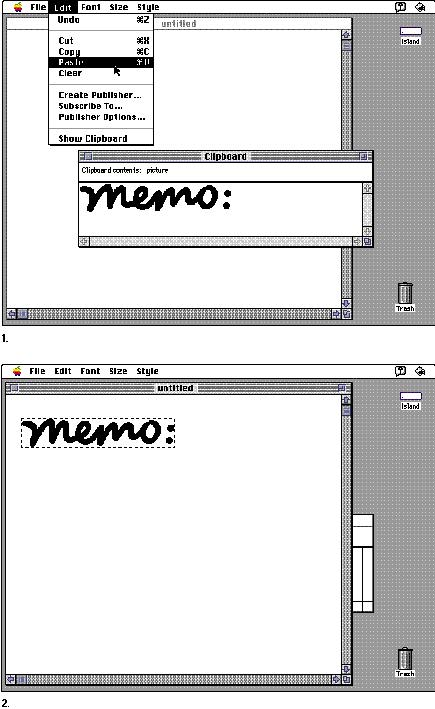 ClearThe Clear command removes data that the user selects just prior to choosing the command. Unlike Cut and Copy, the Clear command does not put the selection in the Clipboard. The Clipboard is unchanged and your application displays the new selection in the same way as it would after a cut operation.Pressing the Delete (Backspace) key or the Clear key has the same effect as choosing the Clear command from the File menu. (Note that the Backspace key and the Clear key do not appear on all keyboards.) Select AllThe Select All command highlights every object in the document. In a word processor, Select All selects every character as well as all graphics in the document. This command is useful if a user wants to copy or reformat an entire document.The Command-A combination is reserved as a keyboard equivalent for the Select All command in the Edit menu. It shouldn't be used for any other purpose. Show Clipboard/Hide ClipboardImplement the Show Clipboard command in the Edit menu so that the user can display and close the Clipboard window, as described earlier in this chapter in the section "The Clipboard." (If the Clipboard is already showing, the user can also use the close box or the Close command to close the window.) Show Clipboard and Hide Clipboard are a single toggled item.Show Clipboard changes to Hide Clipboard when the Clipboard window is displayed. The user can also use the close box in the Clipboard window (or the Close command) to hide the Clipboard. Remember to hide your Clipboard window when your application isn't active. Display it again when the user makes your application active by clicking a window or using the Application menu. Create Publisher...The Create Publisher command creates an edition based on the selected data. Your application stores this data in an edition file. This information updates automatically when a user saves the document that contains the publisher. The entire Edition Manager interface is described in the chapter "Edition Manager" in Inside Macintosh: Interapplication Communication. Figure 4-79 shows the first two steps of the process.Figure 4-79 The Create Publisher command and dialog box 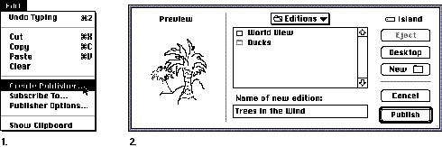 Subscribe To...The Subscribe To command allows the user to specify which edition to insert in the document. Display the Subscribe To dialog box, as shown in Figure 4-80.Figure 4-80 The Subscribe To command and dialog box 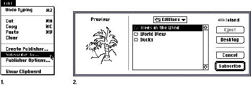 Publisher/Subscriber Options...The Publisher Options and Subscriber Options commands allow you to provide some choices about publishers and subscribers to the user. Publisher/Subscriber Options is a context-sensitive toggled command; the command name changes to reflect whether a publisher or subscriber is selected. If a user selects a publisher, the command should be Publisher Options. If a user selects a subscriber, the command name should change to Subscriber Options. If no area is selected, the command should appear unavailable in the last state it was in.Figure 4-81 shows the Publisher Options dialog box. The options apply to the currently selected publisher. Figure 4-81 The Publisher Options dialog box 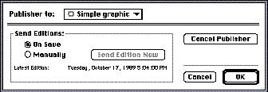 The Cancel Publisher button allows the user to stop sending the information to an edition. The data remains unchanged in the document. The border that denotes a publisher no longer appears when the data is selected. The Send Editions radio buttons allow the user to specify whether to automatically send a new edition when the document is saved or to send the data to the edition when the user decides to do so. The Send Edition Now button becomes available when the user clicks the Manually button. Then the user must click the Send Edition Now button to specifically send a new edition of a publisher. Information that identifies the latest edition sent appears in the area below the radio buttons. If you provide additional options to the user, include the controls in the bottom area of the Publisher Options dialog box. Figure 4-82 shows the Subscriber Options dialog box. The options apply to the currently selected subscriber. Figure 4-82 The Subscriber Options dialog box 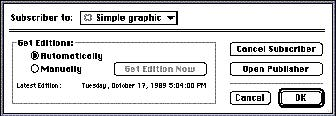 The Edition Manager has no provisions to let users edit subscribers directly because new editions can arrive at any time. This situation could be especially destructive if several users were working over a network with interconnected publishers and subscribers, and new editions arrived that replaced subscribers that had been edited. To make changes to a subscriber, the user must go to the publisher and make changes to it. The user can use the Open Publisher button in the Subscriber Options dialog box. This option locates the document that contains the publisher and opens it, launching the application if necessary. The document automatically scrolls to display the publisher. When the user saves changes to the document, the new contents are written to the edition file and all subscribers are updated. Because the changes are made to the original document, the user can make changes to the data without danger of losing the change in a subscriber. It's important to note that the user must have correct access privileges to the document that contains the publisher for this option to work. If a user doesn't have permission to open a file on a file server or a personal Macintosh, display an alert box to notify the user that the publisher couldn't be opened and why. The Cancel Subscriber button allows the user to break the connection to the edition. The data remains in the document, but new editions won't be received and the borders that denote a subscriber no longer appear. The Get Editions radio buttons allow the user to specify when new editions should be received. If the user clicks Automatically, editions arrive as they become available when the document is open or each time the document is opened if new editions are available. If the user clicks Manually, new editions are received when the user selects the subscriber, chooses Subscriber Options, and then clicks the Get Edition Now button. Information that identifies the latest edition available appears in the area below the radio buttons. If you provide additional options to the user, include the controls in the bottom area of the Subscriber Options dialog box. |